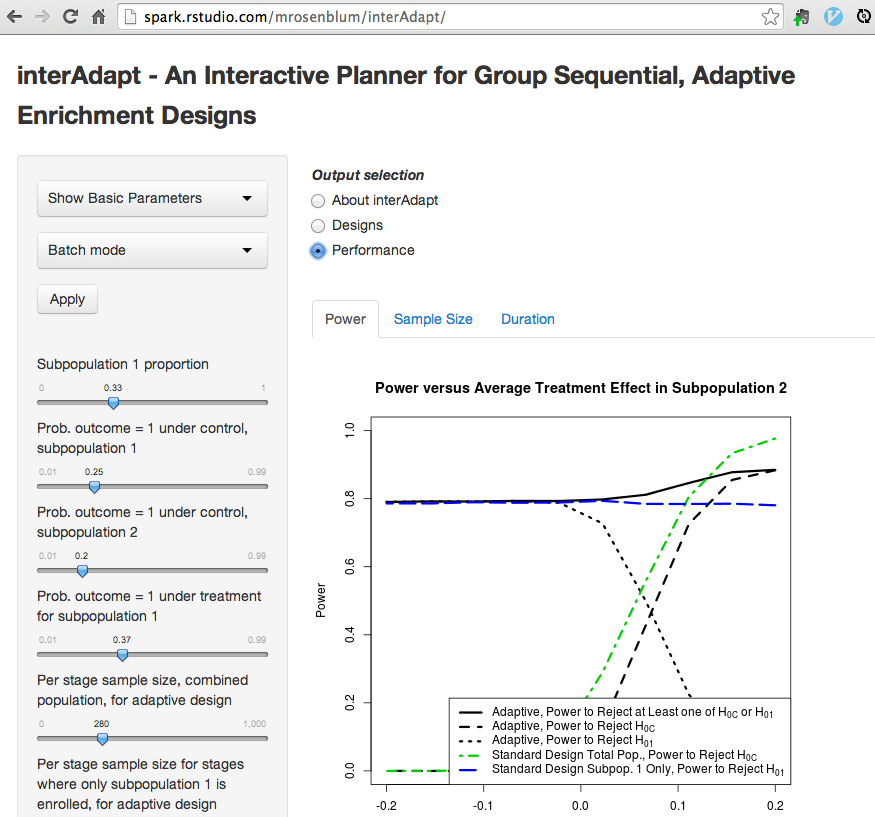

Research
Fast, exact bootstrap principal component analysis for high dimensional data (i.e. >1 million variables)
Principal Component Analysis (PCA) is a common step in many algorithms applied to high dimensional data, where the number of measurements per subject is much greater than the number of subjects. The fitted principal components (PCs), however, are random test statistics with sampling variability -- if a new sample was recruited, the PCs for the new sample would be different. This sampling variability adds to the sampling variability of any method that uses PCA. It is important to acknowledge this added variability, and to try to estimate it. A bootstrap procedure provides one way to estimate sampling variability of PCs, but such a procedure can be computationally demanding.
To ease this computational burden, we developed an exact method for calculating PCs in bootstrap samples that is an order of magnitude faster than the standard method. We applied this method to estimate standard errors of the 3 leading PCs of a brain MRI dataset (≈ 3 million voxels, 352 subjects) based on 1000 bootstrap samples (see below). Computation time was reduced from 4 days to 47 minutes, using a standard laptop.

The key intuition for this speed improvement comes from the fact that all bootstrap samples are contained in the same n-dimensional subspace as the original sample (where n is the sample size). If we represent bootstrap samples by their n-dimensional coordinates relative to this subspace, we can dramatically reduce computation times and memory requirements.
- Paper on arXiv
- (to appear in Journal of the American Statistical Association)
- Poster - JSM 2014
- bootSVD R package for easy implementation of the bootstrap procedure
- ggBrain R package for creating brain image figures
Most people don’t know what a statistically significant relationship looks like, but they can learn: results from a randomized trial in a MOOC
For many researchers, the data analysis process begins by looking at scatterplots. This exploratory data analysis (EDA) often motivates a model, ultimately leading to formal tests of significance for aspects of that model. In this light, initial EDA can be seen as an informal hypothesis testing task, where analysts may choose variables to include in their models based on visual perception of significance. We formally studied this task by testing the accuracy with which humans can detect significance from scatterplots. This work sheds light on the effectiveness of EDA for variable selection, as well as the extent of damange caused when analysts do not correct for multiple hypotheses that are tested informally in the EDA process.
We conducted a survey in a statistics massive open online course (MOOC) where we asked students to classify the relationships shown in scatterplots as either significant or nonsignificant at the 0.05 level. Subjects correctly classified only 47.4% of statistically significant relationships, and 74.6% of non-significant relationships. Classification of statistically significant relationships improved on repeat attempts of the survey, although classification of non-significant relationships did not. Furthermore, adding visual aids to a plot such as a best fit line or scatterplot smooth increased the probability a relationship was classified significant, regardless of whether the relationship was actually significant.
We propose that future empirical research be conducted to study the human variability in data analysis tasks. We call this idea evidence-based data analysis -- the scientific study of how statistical methods perform in practice, when they are implemented, sometimes imperfectly, by analysts of different levels of statistical training.
 Accuracy with which users can classify relationships that are truely significant (blue) and that are nonsignificant (red) on their first attempt of the survey. Each row denotes a different presentation style for the scatterplot shown (e.g. whether Lowess trend lines were added). See the full paper for more details.
Accuracy with which users can classify relationships that are truely significant (blue) and that are nonsignificant (red) on their first attempt of the survey. Each row denotes a different presentation style for the scatterplot shown (e.g. whether Lowess trend lines were added). See the full paper for more details.
Predicting biopsy results in patients with low-risk prostate cancer
For patients with low-risk prostate cancer, prostate biopsies are a highly invasive aspect of active survaillance. I worked with Yates Coley & Scott Zeger on a Bayesian Heirarchical model to predict a patient's latent cancer state based on data from previous prostate biopsies and prostate-specific antigen (PSA) measurements. The goal of this modelling approach is to help guide treatment decisions, and to reduce the number of unnecessary biopsies and protatectamies.
My role in this project was to apply a method for fast latent state estimation based on new patient data. This would allow doctors to give patients in-clinic risk estimates, without having to refit the entire model with batch MCMC. Although the proposed method (based on Importance Sampling) does not require novel Bayesian techniques, it does address one of the obstacles in applying off-the-shelf Bayesain Heirarchical models in clinical settings.
interAdapt application for planning adaptive clinical trials
When designing a clinical trial, study coordinators often have prior evidence that the treatment might work better in a one subpopulation than another. One strategy in these scenarios is to conduct a trial with an adaptive enrollment criteria, where we decide whether or not to continue enrolling patients from each subpopulation based on interim analyses of whether each subpopulation is benefiting. In order for the type I error and the power of the trial to be calculable, the decision rules for changing enrollment must be set before the trial starts.
interAdapt is a tool for generating pre-determined decision rules for trials with adaptive enrollement criteria. Using this application, researchers can also compare the performance of the resulting adaptive trial designs to the performance of standard designs with fixed enrollment criteria. Performance is compared in terms of power, expected sample size, and expected trial duration.
 Screenshot from interAdapt